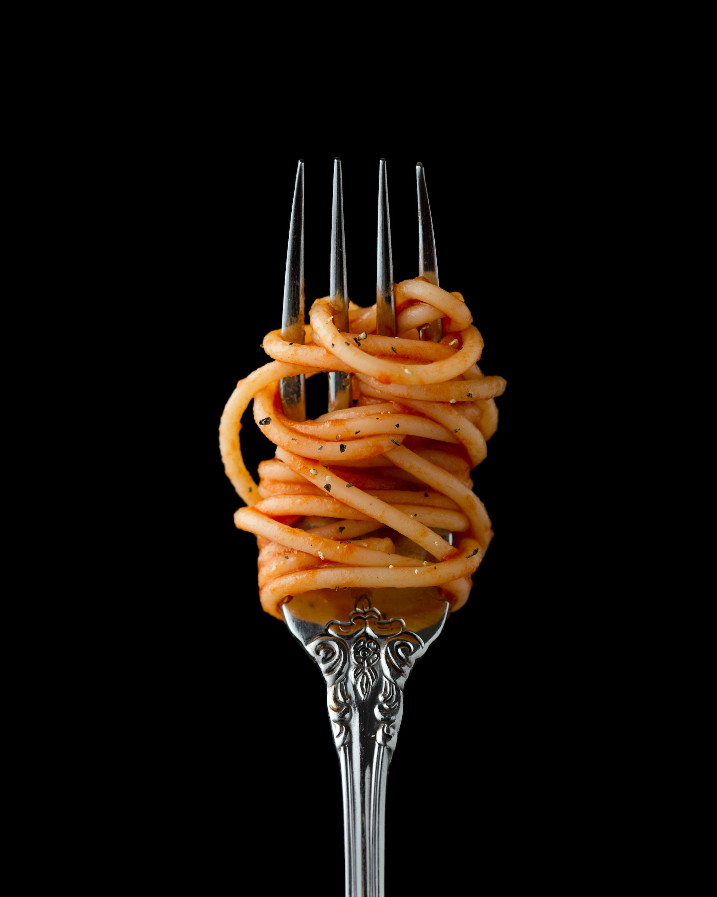

- pasta
- risotto
- pizza
Pasta란 무엇인가?
파스타(이탈리아어: pasta)는 이탈리아의 밀 식품이다. 듀럼밀 세몰라에 물을 섞거나 밀가루에 달걀을 섞어 부풀리지 않고 반대기를 지어서 국수 등의 형태로 만든 음식이며, 삶거나 구워 먹는다. 이탈리아의 주식이며, 국민 음식 가운데 하나로 여겨진다.

이름
이탈리아어 "파스타(pasta)"는 "반죽, 페이스트"를 뜻하는 명사이다.
역사
2세기경 그리스의 의사 갈레노스의 저서에는 밀가루와 물을 함께 혼합해서 만든 itrion이라는 말이 언급되어 있다. 예루살렘 탈무드에 기록된 itrium은 삶은 반죽 종류로, 팔레스타인에서 3세기부터 5세기까지 먹었으며, 9세기의 시리아의 의사이자 사서학자인 Isho bar Ali가[4] 편찬한 사전에는 아라비아 어원을 가지고 있으며, 세몰리나로 만들어 말려서 요리하는 끈같은 모양의 itriyya에 대해서 설명하고 있다. 무함마드 알 이드리시의 지리학 저서에는 1154년 시칠리아 로저 2세 시대의 자료를 편찬하면서 노르만 시칠리아에서 생산하고 수출하는 이트리야 (itriyya)에 대해 언급하고 있다.